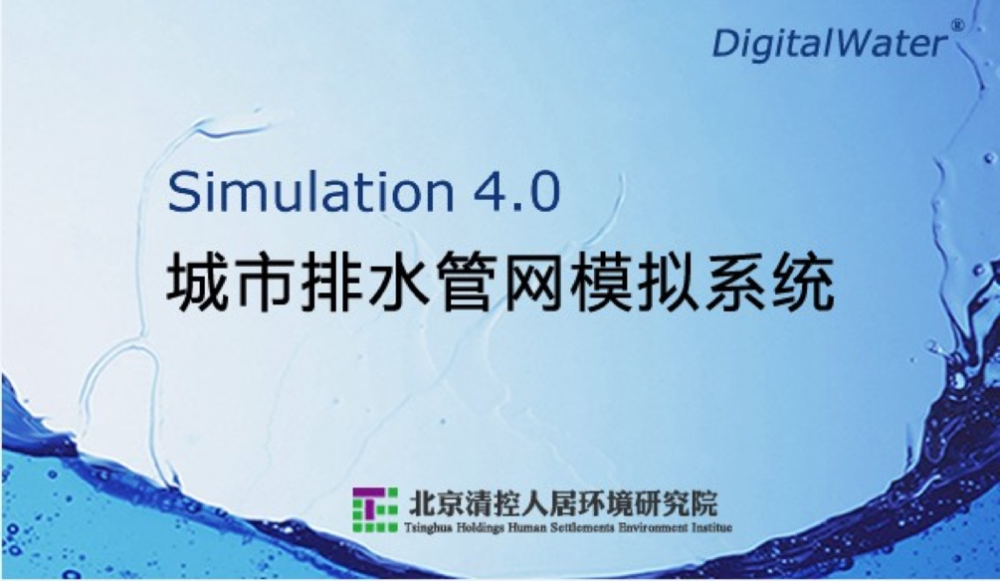
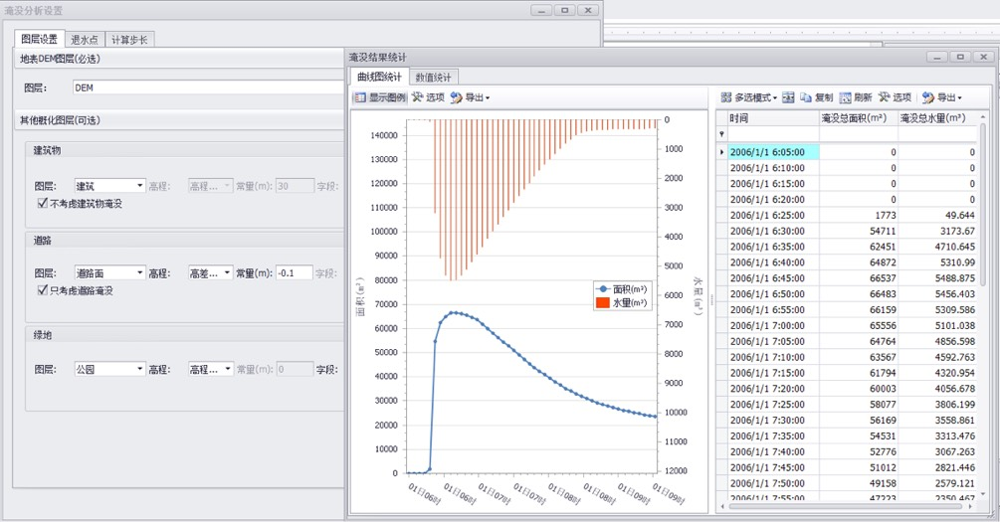
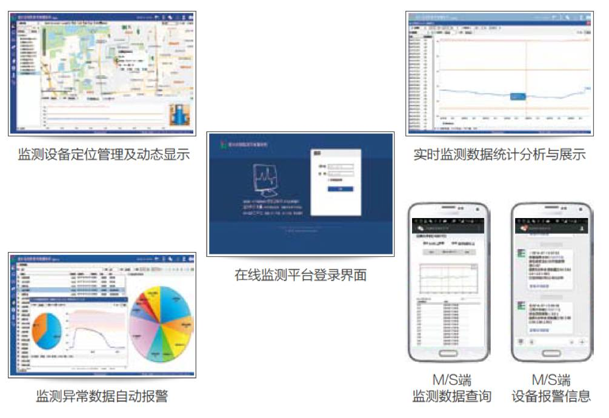
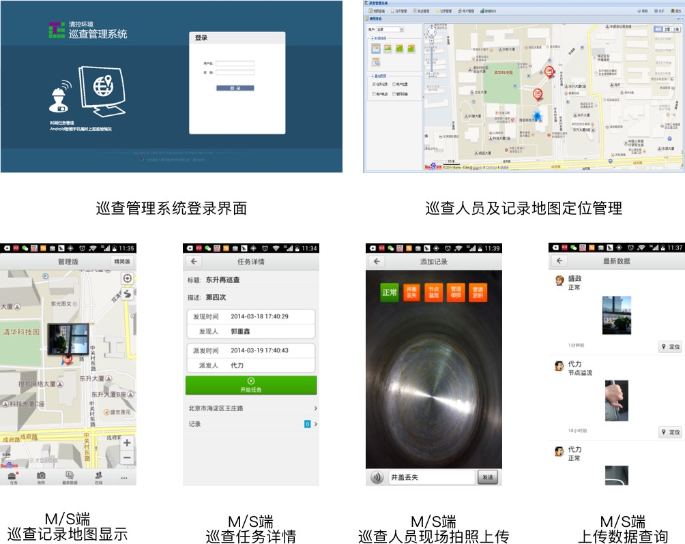
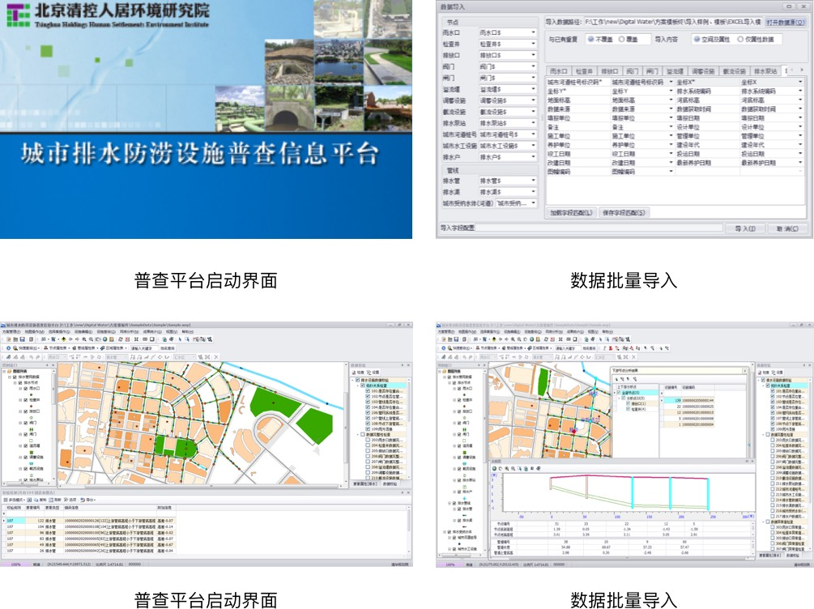
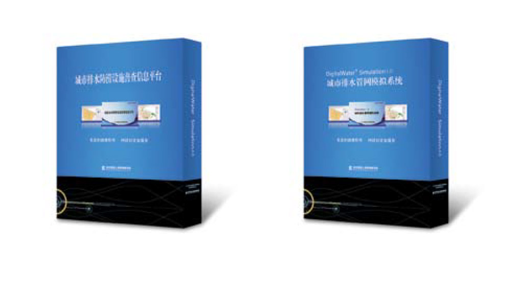

-
DigitalWater Simulation
城市排水管网模拟平台规划内容
● 无缝对接《城市排水防涝设施普查数据采集与管理技术导则》(建城【2013】88号)
● 全面支持《城市排水（雨水）防涝综合规划编制大纲》(建城【2013】98号)
● 住建部全国城市排水防涝设施普查工作推荐管网规划模拟平台
产品功能
● 市政规划设计部门针对排水管网规划、模拟
● 针对排水管网规划模拟分析、校核与评估
产品特点
● 集成全国各地市暴雨公式的暴雨生成器
● 兼容普查数据库，降低建模难度，提高数据共享及应用效率
● 多种类型降雨过程线自动生成，多情景建模方案对比
● 管线过载倍数、节点溢流风险等参数动态计算与可视化展示
● 一维管网与二维地表动态耦合模拟计算
● 全中文的软件界面、操作习惯、帮助手册与培训体系
DigitalWater Monitor
排水管网在线监测平台产品功能
● 依据《城镇排水与污水处理条例》对偷排、漏排进行实时监管，有效执法
● 缩短应急响应时间，提高管理部门对管网突发事故的应急响应能力
● 辅助科学决策，降低管网溢流量和溢流频率
● 对管网运行异常状况进行报警及消息推送
● 管理部门利用实时监测数据及时跟踪管网内水力状况
● 利用决策支持系统提供的科学依据，做出强排、泄洪等科学决策，减少污水溢流
产品特点
● 弥补传统人工巡检的弊端，实现在线监控和预警机制的高效调度
● 支持服务化运行模式，提供云端平台
● 基于公众地图进行设备管理定位，无需购买专业地理信息系统（GIS）软件
● 支持网页及微信进行实时数据查询与报警提醒
DigitalWater Maintain
排水管网巡查平台产品功能
● 巡查人员工作考勤管理
● 管网巡查问题实时填报
● 巡查车辆GPS路线跟踪
● 现场施工图文记录
● 巡查工单制定及自动派发
● 工作区域计划制定
产品特点
● 针对管网巡查现状及实际需求定制，自动化监管提高巡检工作效率和质量
● 基于公众地图进行管理定位，无需购买专业地理信息系统（GIS）软件
● 手机端支持在线与离线模式切换
● 支持浏览器端问题与消息的实时提醒
DigitalWater Survey
城市排水防涝设施普查信息平台产品功能
● 落实《国务院办公厅关于做好城市排水防涝设施建设工作的通知》（国办发【2013】23号）
● 全面支持《城市排水防涝设施普查数据采集与管理技术导则》（建城【2013】88号）
● 住建部全国城市排水防涝设施普查工作推荐单机版平台
产品功能
● 排水设施资产管理
● 排水管网地理信息系统
● 排水普查管网设施数据信息化归档、校核
● 排水普查成果展示、生成普查报告
产品特点
● 城市排水防涝设施普查信息平台
● 现场测绘及已有数据的批量导入
● 快速检验数据质量及拓扑关系
● 上下游网络及纵断面一键分析